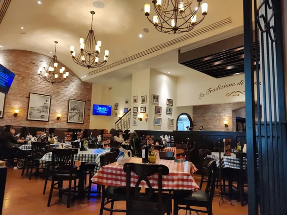

La forma en la que nos puede contactar son por medio de via whatsapp o via telefonica para tener una resrvacion el tiempo del comunicado debe de ser entre 2-5 horas de anticipacion para tener una reservacion con tiempo para el usuario
Sucursales en las cuales puede ir a visitar
Manuel González, en Veracruz
Fernández Leal y Carlos Pacheco en Puebla
Porfirio Díaz en Morelos
Aldana en el D.F
Diéz Gutiérrez en San Luis Potosí
Parque tezontle en la ciudad de Mexico
Plaza parque tepeyac
Dentro la ciudad de Mexico hay mucho más sucursales para la experiencia de mucha mas poblacion
